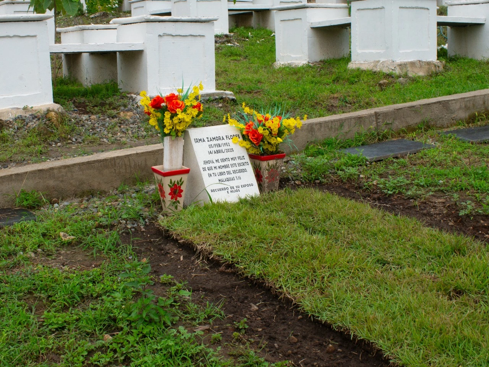
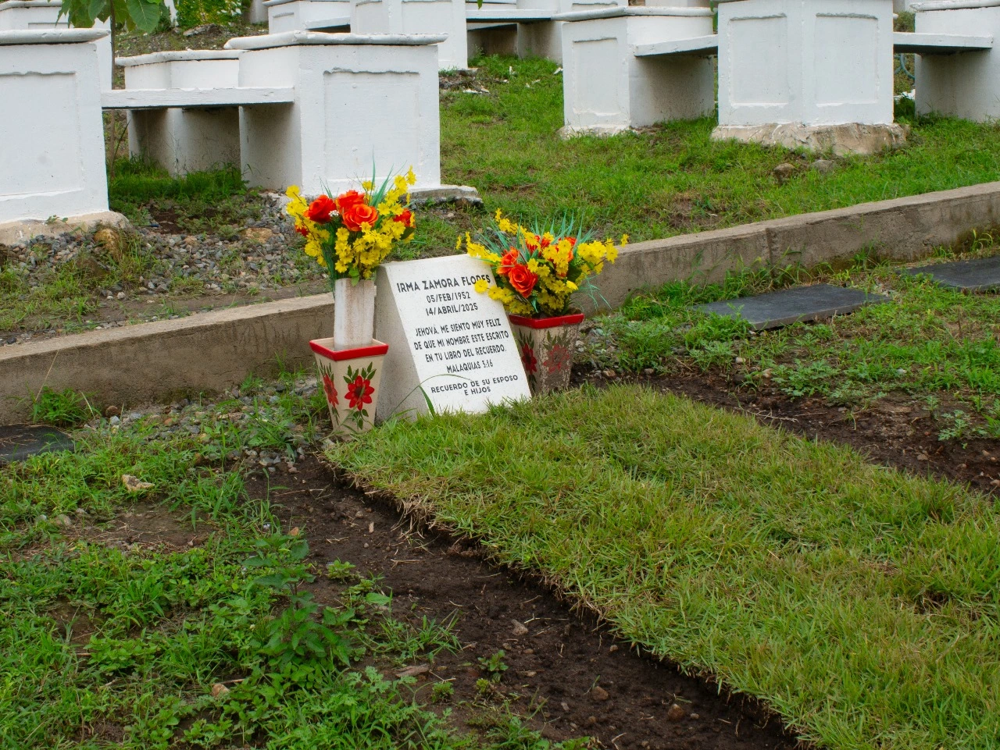
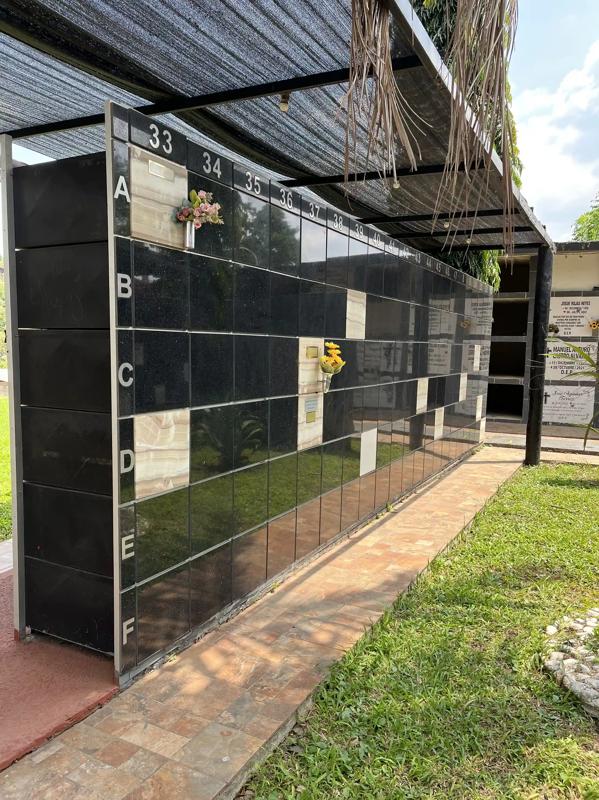
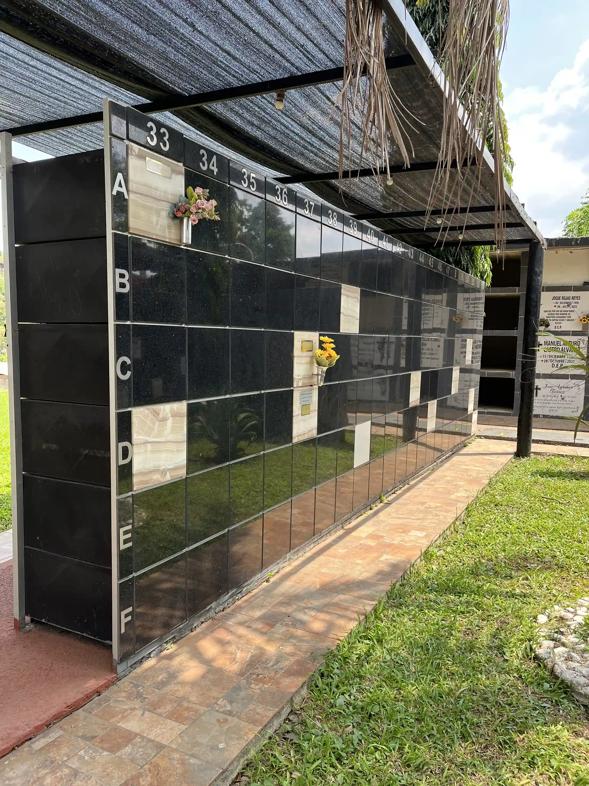

Emergencias:
+52 962 625 2967
Nuestros nichos ecológicos ofrecen una alternativa sostenible: en lugar de lápida, se planta un árbol conmemorativo rodeado de hasta cuatro espacios para descanso eterno. Es una opción simbólica y respetuosa con la naturaleza, distinta a los jardines tradicionales.

El espacio tipo jardín está destinado a la inhumación tradicional, ofreciendo un entorno armonioso y digno para honrar a quienes ya no están. Es una opción que brinda un lugar permanente donde las familias pueden recordar, visitar y acompañar en la distancia.
 

El columbario es un espacio especialmente diseñado para conservar las cenizas de tus seres queridos en un ambiente digno, tranquilo y seguro. Es una alternativa práctica y respetuosa que permite rendir homenaje en un lugar permanente y accesible para la familia.
 

Dirección:
Calle Ciprés 1, Jardines de
Chiapas, Tapachula, Chiapas.
(Referencia: Atrás del Hospital COFAT)